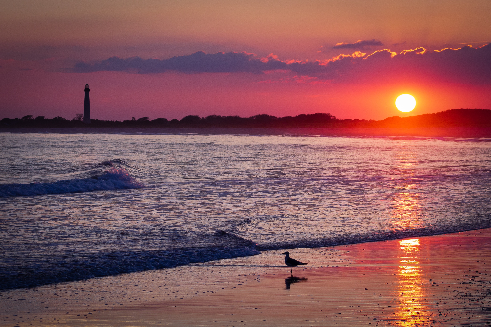

Наведите мышь на картинку: чем правее — тем сильнее эффект.
При наведении будет работать Фильтр blur.
При нажатой клавише Ctrl - фильтр grayscale.
При нажатой клавише Alt - фильтр contrast.
При нажатой клавише Shift - фильтр invert.

При наведении будет работать Фильтр blur.
При нажатой клавише Ctrl - фильтр grayscale.
При нажатой клавише Alt - фильтр contrast.
При нажатой клавише Shift - фильтр invert.
Фильтр: none(0)